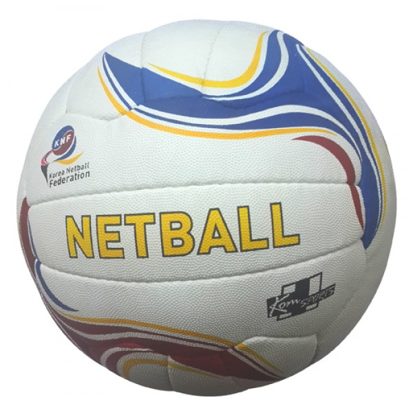
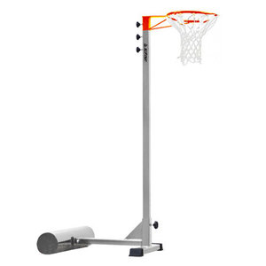

넷볼이란 여성에 맞게 규격과 규칙이 조정된 농구와 흡사한 스포츠이다.
 1팀 7명으로 구성되며 볼을 패스해서 골포스트 위쪽 끝에 설치된 링에 슛을 하여 그 점수를 겨루는 경기이다. 이 경기의 최대 특징은 선수 1인이 움직이는 범위가 정해져 있는 것이다. 이 때문에 모든 선수는 자신의 포지션을 나타내는 영문약자가 표시된 팀 조끼를 입고 경기를 해야 한다. 이와 같은 룰에 의해 안전하고 재미있는 경기가 된다. 즉, 선수가 한 장소에 너무 많이 집중하지 않아 각자의 플레이가 가능해지고 안전하며 자신의 역할이 명확해져 자신 있는 포지션에서 자신 있게 플레이할 수 있다. 또한, 플레이와 휴식을 교대로 할 수 있어 운동량이 적당해져 장시간 플레이를 즐길 수 있다.